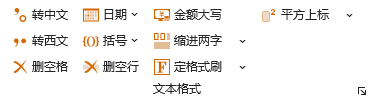

，可以调出设置界面：
，可以调出设置界面：Ribbon菜单Word 格式助手中如下图所示部分可进行文本格式的操作：
此功能可以将选中文本中的西式（半角）标点符号转化为中式（全角）标点符号。中式（全角）标点符号有，。：；（）［］｛｝＜＞？!～ ；西式（半角）标点符号有,.:;()[]{}<>?!~，它们一一对应，通过本功能相互转化。并且这些标点分为三组，可以分别设置为转换目标或者忽略。点击功能区右下角的小箭头，可以调出设置界面：

设置界面可以保留不关闭，也可关闭，选择都生效，但关闭Word程序后再次打开，设置将重置。
此功能可以将选中文本中的空格删除。通过上述界面设置，该功能也有两种模式：一种式删除所有空格，一种仅删除特定的标点符号之后的空格。
此功能可以插入当前日期，或根据选项插入带空位的日期，例如：“2023年 月 日”。
此功能可以为选定的文本添加括号、引号或书名号等。对于括号类型的符号，可以通过设置确定使用全角符号还是半角符号；如果选择替换现有括号，且所选择的内容首尾为符号对时，将产生替换效果。
当选择内容为阿拉伯数字的时候，可将其转换为人民币大写的形式，例如选择：5888.88，则转换后的结果为：伍仟捌佰捌拾捌元捌角捌分。最大可到万亿单位，最小为小数点后三位。当结尾为元，无角分厘单位时，将自动添加整字结尾。例如选择：259.00，则转换后的结果为：貳佰伍拾玖元整。当选择的内容无法被转换为正确的数字时，输出结果将提示错误，通过Word的撤销操作可以恢复原来的文字内容。
该功能可以快速为所选段落设置2字符的缩进，或者移除当前的缩进（注意，空格不属于缩进，不能被移除，请使用删除空格功能）
该功能在当前选择区域内删除空行，空行指仅有回车符的行。该功能不支持多区域选择。
该功能支持保存多个设置的格式，可以任何时候直接使用该格式刷刷新格式，而不需要再去选择源格式文本。格式可以保存到本地硬盘，重新开启Word程序时，之前保存的格式仍然生效。该功能格式支持中文、西文字体名称，字体大小，样式，文字颜色，底纹颜色几类设置。
通过下拉按钮可以调用格式设置界面如下：
左侧列表框内罗列了已经保存的格式，初始使用时自动生成一个默认的格式，可以通过右侧的格式设置进行更改，每次完成更改必须点击修改格式修改当前选中格式或者新建格式创建一个新格式，否则格式将不会保存至本地。格式名称可以重复，但不可为空。删除格式可以删除任一格式，但必须保证至少还剩1个格式样式。
格式中字体颜色、底纹设置为选项，当不勾选时，格式刷不修改原文本的文本颜色或底纹。
当前选择的格式样式即为格式刷所应用的格式，点击应用格式刷按钮功能与Ribbon中的定格式刷按钮功能一样，即使不开启该界面。该选择同样保存至本地，下次开启Word也将使用上一次的选择。
使用上述功能的提示及注意事项：